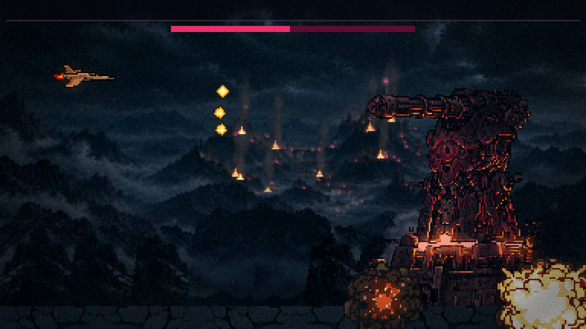
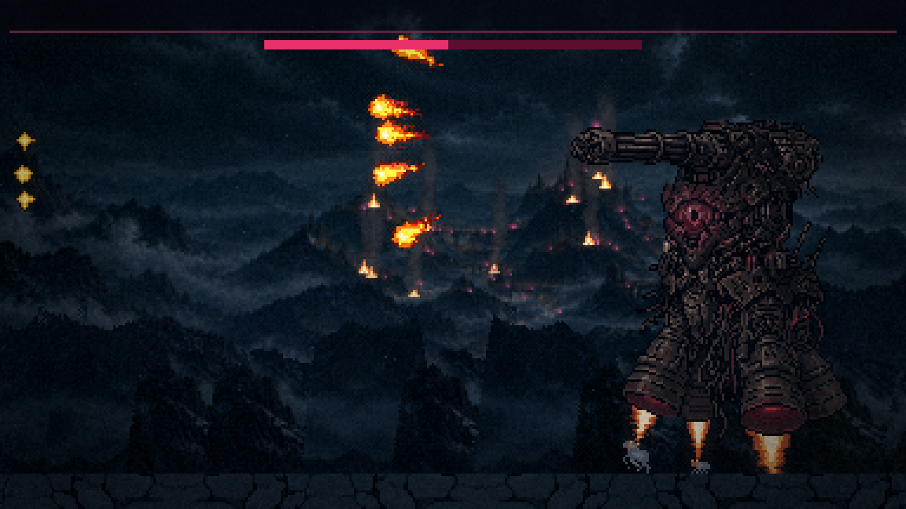
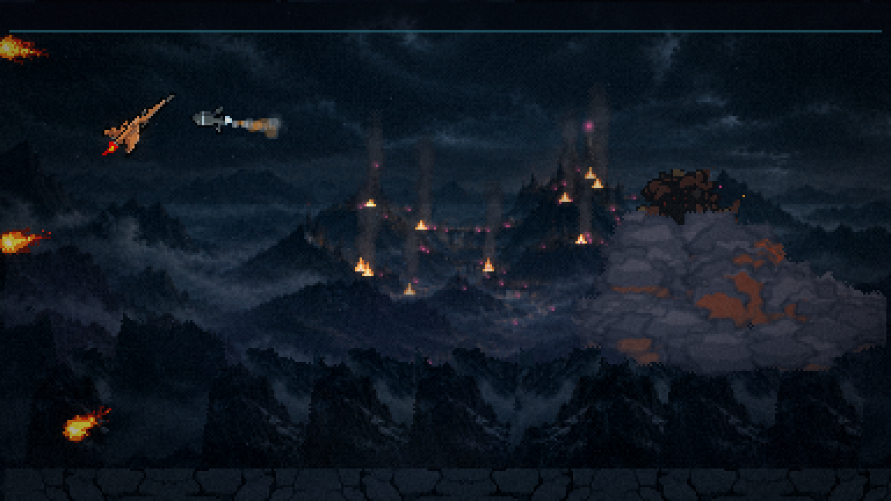
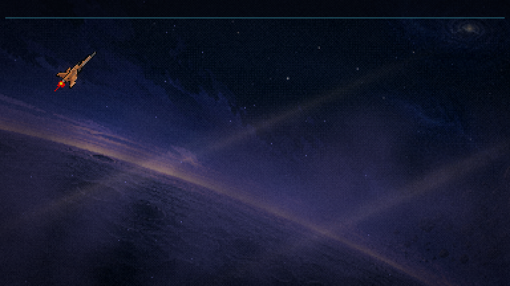
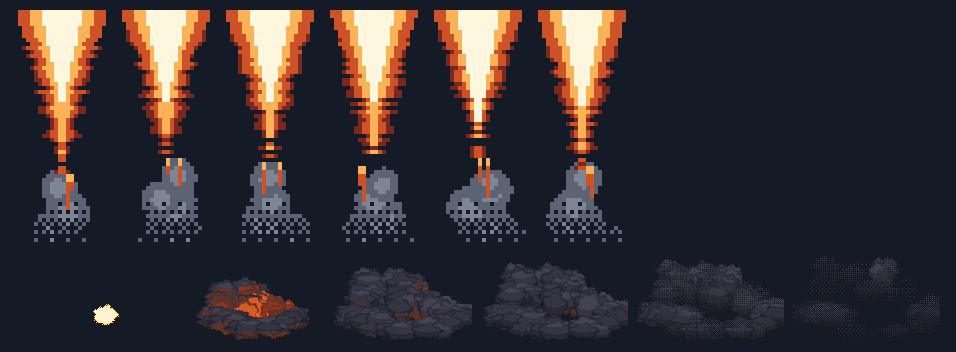

20/10/2026 · ← rodada 3 · Feita com você fora. A Torre que você refez em agosto fica igual; ganha as plumas dos propulsores, a poeira da queda do Leviatã quando se arranca do chão e a explosão da queda no lugar da fumaça em bolinhas. Na subida para o zero-G, a nave fica com o bico a 45°.
A luta, em velocidade real
16 s: a Torre pousada leva metade da vida e decola; voa uns 5 s; morre; a atmosfera rompe e a nave sobe a 45°. A nave está parada no alto à esquerda, intocável, e os tiros dela escondidos (filmagem).
Os quatro momentos

A decolagem: a cidadela explode em cadeia e se arranca do chão; atrás da base nasce a poeira da queda do Leviatã, rente ao chão.

No ar: as três plumas saem dos bocais acesos (o quarto fica escondido atrás). Fortes na decolagem, respirando no voo.

A morte: a explosão da queda do Leviatã no tamanho da Torre, no lugar da fumaça em bolinhas (o item 9 da análise, na F1). O tranco e o flash continuam os de antes.

A subida: a nave com o bico a 45°, entrando suave no ângulo (0,4 s). O controle continua na sua mão; o tiro sai reto.
As peças, assadas em pixel

Em cima (4×): a pluma maior, seis quadros: branca na boca, âmbar, vermelha, línguas de fogo e o vapor frio no fim (há três tamanhos, um por bocal). Embaixo: a explosão da queda do Leviatã reduzida a 150 px, um quadro a cada quatro.
O que ficou como estava
A arte da Torre (as duas formas de agosto).
O flash magenta da decolagem (160 ms, tela inteira): no vídeo ele não apaga a cadeia de estouros, então não mexi. A regra dos flashes de tela cheia segue para o bloco J.
A pedra da base conversa com o chão novo; não precisou de ajuste.
O que você decide
As plumas: o tamanho e a força.
A explosão da morte: o tamanho e a duração (hoje 1 s).